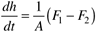
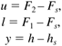
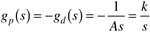

| [ Team LiB ] |
|
M10.2 Process ModelHere, we develop a process model for the vessel in Figure M10-1a, which is a vertically oriented cylinder that can be assumed to have a constant cross-sectional area. The development of a model for the vessel in Figure M10-1b is left as an exercise for the reader. A material balance around the vessel, assuming constant density and cross-sectional area (A), yields  The deviation variables for the manipulated input, load disturbance, and measured output are  The process and load disturbance transfer functions are then  Notice that this is an integrating process, since the pole = 0. |
| [ Team LiB ] |
|